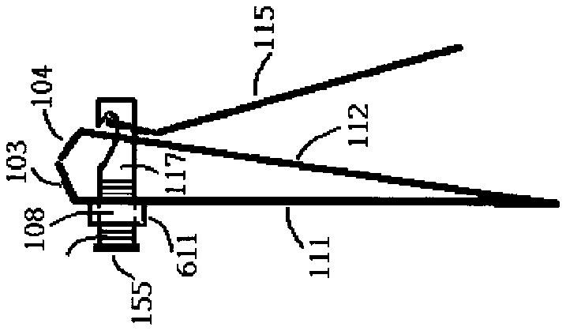
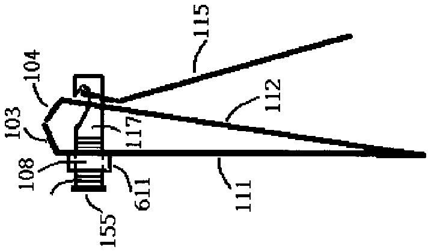

- 3 or
- 103first cutting edge
- 104second cutting edge
- 108first supporting shaft hole
- 109hole
- 111first blade body
- 112second blade body
- 115lever
- 117supporting shaft
- 122hook-like groove
- 149fulcrum
- 155stopper
- 191arrows
- 193arrows
- 196hole
- 611thickened body
- 612thickened body
- 613thickened body
- 803two cutting edges
- 804second cutting edge
- 811first blade body
- 812second blade body
- 815lever
- 817supporting shaft
- 833hole
- 834hole
- 835first supporting shaft hole
- 855stopper
- 888nail clipper body
- 890thickened body
- 891thickened body
- 892thickened body
Abstract
A nail clipper including threaded supporting shaft and threaded inner wall of a blade body the most away from the lever. The threaded supporting shaft and the threaded inner wall of the blade body can be screwed together clockwise and counterclockwise to adjust the distance between the two cutting edges.
Description
FIELD OF INVENTION
[0001] This invention relates to a nail clipper, and, more particularly, to such a device having adjustable distance between two cutting edges for cutting healthy and sick fungus nails. And more, the two cutting edges of the nail clipper can be adjusted to touch with each other for better protecting children from misusing it.
DESCRIPTION OF THE RELATED ART
[0002] FIG. 1 has shown a conventional and typical nail clipper which includes a first blade body 111 having a first end and a second end opposite to the first end, a second blade body 112 having a third end and a fourth end opposite to the third end, a supporting shaft 117 and a lever 115 .
[0003] The first blade body 111 has a first cutting edge 103 at the first end and has a first supporting shaft hole adjacent to the first cutting edge 103 . The second blade body 112 has a second cutting edge 104 at the third end and has a second supporting shaft hole adjacent to the second cutting edge 104 . The second end of the first blade body 111 and the fourth end of the second blade body 112 are fixed with each other and a cutting mouth is formed by the first cutting edge 103 and second cutting edge 104 facing with each other.
[0004] The lever 115 is operated for bringing the two cutting edges 103 , 104 respectively of the two blade bodies 111 , 112 into press contact with each other by leverage. And, the supporting shaft 117 is disposed through the first and second supporting shaft holes respectively of the first and second blade bodies 111 and 112 and is coupled with the lever 115 . The first supporting shaft and the second supporting shaft are not visible in FIG. 1 but will be shown in the breakdown drawings of FIG. 3 .
[0005] FIG. 2 a is the side view of the nail clipper of FIG. 1 . FIG. 3 has shown the nail clipper of FIG. 1 and 2 broken into more detailed parts. FIG. 3 b has shown the coupled first blade body 111 and second blade body 112 in side view. FIG. 3 a and 3 c are respectively the front views of the first blade body 111 and second blade body 112 whose viewed orientations are respectively shown by arrows 191 and 192 . The first supporting shaft hole 108 and second supporting shaft hole 109 for disposing the supporting shaft 117 respectively adjacent to the first and second cutting edges 103 , 104 respectively of the first and second blade bodies 111 , 112 are respectively seen in FIG. 3 a and 3 c.
[0006] FIG. 3 d and 3 f are respectively the front and back views of the lever 115 shown in FIG. 3 e whose viewed orientations are respectively shown by arrows 193 and 194 . The lever 115 has a hole 196 and a thin support 195 for coupling with the supporting shaft 117 through its a hook-like groove 122 shown in FIG. 3 h . A fulcrum 149 is also seen on the lever 115 for leverage.
[0007] FIG. 3 g is the top view of the supporting shaft 117 of FIG. 3 h whose viewed orientation is shown by an arrow 195 . The hook-like groove 122 on the supporting shaft 117 seen in FIG. 3 h is for coupling the lever 115 . The size of a stopper 155 at the other end away from the hook-like groove 122 of the supporting shaft 117 is a little bigger than that of the size of the first supporting shaft hole 108 for holding the two blade bodies 111 , 112 between the stopper 155 and the lever 115 .
[0008] The supporting shaft 117 is disposed and confined in the two supporting shaft holes 108 , 109 and the supporting shaft 117 is rotatable within a range of 360 degrees in the first and second supporting shaft holes 108 , 109 . Very commonly seen in typical nail clipper, the first supporting hole 108 of the first blade body 111 is in round (or cylinder if the thickness of the first blade body 111 is taken into consideration) and the second supporting hole 109 of the second blade body 112 is not in round. By rotating the lever 115 clockwise or counterclockwise centering around the supporting shaft 117 can respectively rotate the supporting shaft 117 in the two holes 108 and 109 clockwise or counterclockwise. By levering the lever 115 against the second blade body 112 will move the second blade body 112 along the supporting shaft 117 toward the first blade body 111 bringing the two cutting edges 103 and 104 respectively of the two blade bodies 111 and 112 into press contact with each other.
[0009] The present invention is not so limited although the embodiment of the nail clipper of FIG. 2 a has shown that one end opposite to the first cutting edge 103 of the first blade body 111 fixes with one end opposite to the second cutting edge 103 of the second blade body 112 . Another nail clipper shown in FIG. 2 b has shown that one opposite end to the first cutting edge 103 of the first blade body fixes with the second blade body at nearly its middle location instead of its opposite end to the second cutting edge 104 . In a more general form, any part of the first blade body can fix with any part of the second blade body and the first and second cutting edges respectively of the first and second blade bodies face each other to form a cutting mouth. The structure of the nail clipper of FIG. 2 a is more popularly adopted by current market.
[0010] Another type of a nail clipper publicized by an USA patent number U.S. Pat. No. 7,020,964 titled as “Nail clipper and nail cutter, lever and supporting shaft for the same” includes one more member “nail clipper body” than that of the conventional nail clipper of FIG. 1 . More detailed information of the patent can be referred to the patent number U.S. Pat. No. 7,020,964. FIG. 8 a is the side view of the nail clipper of which a nail clipper body 888 is disposed between the lever 815 and blade body 812 . By levering the lever 815 against the nail clipper body 888 will move the nail clipper body 888 and the second blade body 812 along the supporting shaft 817 toward the first blade body 811 into cutting finally.
[0011] The types of the nail clippers revealed above have characterized that the distance between two cutting edges is fixed and is not adjustable. The distance between the first and second cutting edges respectively of the first and second blade bodies can also be called in short “cutting mouth” in the present invention.
[0012] The cutting mouths of the existed nail clippers have been suitably designed for the thickness of healthy nail and they are sometimes are too narrow for rooming the fungus nail which usually grows thicker and more irregular than a healthy nail. If the cutting mouth has been designed to be large enough for the thick fungus nail then it will be inconvenient for precisely cutting thin and normal nail. If the cutting mouth has been designed for rooming healthy nail then it will be too narrow for the fungus nail. This means that a nail clipper with an adjustable cutting mouth is needed. Another advantage of a nail clipper with adjustable cutting mouth is that if the two cutting edges of a nail clipper can be adjusted to touch with each other or the distance between the two cutting edges is too small to room anything then the nail clipper will be much safer to children.
SUMMARY OF THE INVENTION
[0013] It is a first objective of the present invention to provide a nail clipper of which the distance between its two cutting edges is adjustable for healthy and fungus nail cuttings.
[0014] It is a second objective of the present invention to provide a nail clipper of which the two cutting edges can be adjusted to touch each other when it is not in service for protecting children from misusing it.
BRIEF DESCRIPTION OF THE DRAWINGS
[0015] FIG. 1 has shown a typical nail clipper;
[0016] FIG. 2 a is the side view of the nail clipper of FIG. 1 ;
[0017] FIG. 2 b has shown a nail clipper in side view of which one end of a blade body fixes with the other blade body instead of it's the other end;
[0018] FIG. 3 a is the front view of the first blade body of FIG. 3 b;
[0019] FIG. 3 b has shown the coupled first and second blade bodies of the nail clipper of FIG. 2 a;
[0020] FIG. 3 c is the front view of the second blade body of FIG. 3 b;
[0021] FIG. 3 d is the front view of the lever of the nail clipper of FIG. 3 e;
[0022] FIG. 3 e has shown the lever of the nail clipper of FIG. 2 a;
[0023] FIG. 3 f is the back view of the lever of FIG. 3 e;
[0024] FIG. 3 g is the top view of the supporting shaft of the nail clipper of FIG. 3 h;
[0025] FIG. 3 h has shown the side view of the supporting shaft of the nail clipper of FIG. 2 a;
[0026] FIG. 4 has shown that a portion of the supporting shaft of the nail clipper of FIG. 2 a or 3 h is threaded; FIG. 5 has shown the nail clipper of FIG. 2 a of which a portion of the supporting shaft and the inner wall of the first supporting shaft hole are threaded;
[0027] FIG. 6 a has shown a portion of the first blade body is thickened for increasing the threading area of inner wall of the first supporting shaft hole thereof, in which the thickened part is on the left of the first blade body;
[0028] FIG. 6 b is the front view of the nail clipper of FIG. 6 a;
[0029] FIG. 6 c has shown a portion of the first blade body is thickened for increasing the threading area of inner wall of the first supporting shaft hole thereof, in which the thickened part is on the right of the first blade body;
[0030] FIG. 6 d is the front view of the nail clipper of FIG. 6 c;
[0031] FIG. 6 e has shown a portion of the first blade body is thickened for increasing the threading area of inner wall of the first supporting shaft hole thereof, in which the thickened part is contributed on the both side of the first blade body;
[0032] FIG. 6 f is the front view of the nail clipper of FIG. 6 e;
[0033] FIG. 7 has shown one end or the stopper of the supporting shaft has been carved for being rotated by flat or Philips screwdriver;
[0034] FIG. 8 a has shown a nail clipper of a patent publicized by an USA patent number U.S. Pat. No. 7,020,964 in side view;
[0035] FIG. 8 b has shown the nail clipper of FIG. 8 a of which a portion of the supporting shaft and the inner wall of the first supporting shaft hole are threaded;
[0036] FIG. 8 c has shown a portion of the first blade body is thickened for increasing the threading area of inner wall of the first supporting shaft hole thereof, in which the thickened part is on the left of the first blade body;
[0037] FIG. 8 d has shown a portion of the first blade body is thickened for increasing the threading area of inner wall of the first supporting shaft hole thereof, in which the thickened part is on the right of the first blade body;
[0038] FIG. 8 e has shown a portion of the first blade body is thickened for increasing the threading area of inner wall of the first supporting shaft hole thereof, in which the thickened part is distributed on the both side of the first blade body;
[0039] FIG. 9 a has shown that the two cutting edges of a nail clipper are adjusted to touch with each other for improving safety to children; and
[0040] FIG. 9 b is the nail clipper of FIG. 9 a with its lever returned to non-working position.
DETAILED DESCRIPTION OF THE INVENTION
[0041] FIG. 1 has shown a conventional and typical nail clipper which includes a first blade body 111 having a first end and a second end opposite to the first end, a second blade body 112 having a third end and a fourth end opposite to the third end, a supporting shaft 117 and a lever 115 .
[0042] The first blade body 111 has a first cutting edge 103 at the first end and has a first supporting shaft hole adjacent to the first cutting edge 103 . The second blade body 112 has a second cutting edge 104 at the third end and has a second supporting shaft hole adjacent to the second cutting edge 104 . The second end of the first blade body 111 and the fourth end of the second blade body 112 are fixed with each other and a cutting mouth is formed by the first cutting edge 103 and second cutting edge 104 facing with each other.
[0043] The lever 115 is operated for bringing the two cutting edges 103 , 104 respectively of the two blade bodies 111 , 112 into press contact with each other by leverage. And, the supporting shaft 117 is disposed through the first and second supporting shaft holes respectively of the first and second blade bodies 111 and 112 and is coupled with the lever 115 . The first supporting shaft and the second supporting shaft are not visible in FIG. 1 but will be shown in the breakdown drawings of FIG. 3 .
[0044] FIG. 2 a is the side view of the nail clipper of FIG. 1 . FIG. 3 has shown the nail clipper of FIG. 1 and 2 broken into more detailed parts. FIG. 3 b has shown the coupled first blade body 111 and second blade body 112 in side view. FIG. 3 a and 3 c are respectively the front views of the first blade body 111 and second blade body 112 whose viewed orientations are respectively shown by arrows 191 and 192 . The first supporting shaft hole 108 and second supporting shaft hole 109 for disposing the supporting shaft 117 respectively adjacent to the first and second cutting edges 103 , 104 respectively of the first and second blade bodies 111 , 112 are respectively seen in FIG. 3 a and 3 c.
[0045] FIG. 3 d and 3 f are respectively the front and back views of the lever 115 shown in FIG. 3 e whose viewed orientations are respectively shown by arrows 193 and 194 . The lever 115 has a hole 196 and a thin support 195 for coupling with the supporting shaft 117 through its a hook-like groove 122 shown in FIG. 3 h . A fulcrum 149 is also seen on the lever 115 for leverage. FIG. 3 g is the top view of the supporting shaft 117 of FIG. 3 h whose viewed orientation is shown by an arrow 195 . The hook-like groove 122 on the supporting shaft 117 seen in FIG. 3 h is for coupling the lever 115 . The size of a stopper 155 at the other end away from the hook-like groove 122 of the supporting shaft 117 is a little bigger than that of the size of the first supporting shaft hole 108 for holding the two blade bodies 111 , 112 between the stopper 155 and the lever 115 .
[0046] The supporting shaft 117 is disposed and confined in the two supporting shaft holes 108 , 109 and the supporting shaft 117 is rotatable within a range of 360 degrees in the first and second supporting shaft holes 108 , 109 . Very commonly seen in typical nail clipper, the first supporting hole 108 of the first blade body 111 is in round (or cylinder if the thickness of the first blade body 111 is taken into consideration) and the second supporting hole 109 of the second blade body 112 is not in round. By rotating the lever 115 clockwise or counterclockwise centering around the supporting shaft 117 can respectively rotate the supporting shaft 117 in the two holes 108 and 109 clockwise or counterclockwise. By levering the lever 115 against the second blade body 112 will move the second blade body 112 along the supporting shaft 117 toward the first blade body 111 bringing the two cutting edges 103 and 104 respectively of the two blade bodies 111 and 112 into press contact with each other.
[0047] The present invention is not so limited although the embodiment of the nail clipper of FIG. 2 a has shown that one end opposite to the first cutting edge 103 of the first blade body 111 fixes with one end opposite to the second cutting edge 103 of the second blade body 112 . Another nail clipper shown in FIG. 2 b has shown that one opposite end to the first cutting edge 103 of the first blade body fixes with the second blade body at nearly its middle location instead of its opposite end to the second cutting edge 104 . In a more general form, any part of the first blade body can fix with any part of the second blade body and the first and second cutting edges respectively of the first and second blade bodies face each other to form a cutting mouth. The structure of the nail clipper of FIG. 2 a is more popularly adopted by current market.
[0048] Another type of a nail clipper publicized by an USA patent number U.S. Pat. No. 7,020,964 titled as “Nail clipper and nail cutter, lever and supporting shaft for the same” includes one more member “nail clipper body” than that of the conventional nail clipper of FIG. 1 . More detailed information of the patent can be referred to the patent number U.S. Pat. No. 7,020,964. FIG. 8 a is the side view of the nail clipper of which a nail clipper body 888 is disposed between the lever 815 and blade body 812 . By levering the lever 815 against the nail clipper body 888 will move the nail clipper body 888 and the second blade body 812 along the supporting shaft 817 toward the first blade body 811 into cutting finally.
[0049] The types of the nail clippers revealed above have characterized that the distance between two cutting edges is fixed and is not adjustable. The distance between the first and second cutting edges respectively of the first and second blade bodies can also be called in short “cutting mouth” in the present invention.
[0050] The cutting mouths of the existed nail clippers have been suitably designed for the thickness of healthy nail and they are sometimes are too narrow for rooming the fungus nail which usually grows thicker and more irregular than a healthy nail. If the cutting mouth has been designed to be large enough for the thick fungus nail then it will be inconvenient for precisely cutting thin and normal nail. If the cutting mouth has been designed for rooming healthy nail then it will be too narrow for the fungus nail. This means that a nail clipper with an adjustable cutting mouth is needed. Another advantage of a nail clipper with adjustable cutting mouth is that if the two cutting edges of a nail clipper can be adjusted to touch with each other or the distance between the two cutting edges is too small to room anything then the nail clipper will be much safer to children.
[0051] For all the types of the nail clippers revealed in the present invention, at least a portion of the supporting shaft is threaded and at least the threaded portion of the supporting shaft is in cylindrical shape, and the inner wall of the supporting shaft hole of a blade body the most away from the lever is threaded and in cylindrical shape, and the threaded portion of the supporting shaft and threaded inner wall of the first supporting shaft hole are screwed with each other clockwise or counterclockwise to adjust the distance between the first and second cutting edges. To perform the screwing motion, the threaded inner wall of the supporting shaft and the threaded portion of the supporting shaft are in cylindrical shape although the present invention is not so limited.
[0052] FIG. 4 has shown the supporting shaft 117 of FIG. 3 h of which a portion, marked by 450 , adjacent to the stopper 155 side is threaded and at least the threaded portion of the supporting shaft 117 is in cylindrical shape for screwing with the threaded inner wall of the supporting shaft hole. By using the nail clipper of FIG. 2 a as an example, the inner wall of the first supporting shaft hole is threaded and the threaded supporting shaft of FIG. 4 is disposed through the first and second supporting holes respectively of the first and second blade bodies, which has been shown in FIG. 5 , although the threads of the inner wall are not visible in FIG. 5 . And further, by rotating the lever 115 centering around the supporting shaft 117 clockwise or counterclockwise can rotate the coupled supporting shaft 117 clockwise or counterclockwise resulting in screwing the threaded supporting shaft and the first supporting shaft hole together clockwise or counterclockwise to adjust the cutting mouth.
[0053] Due to the thickness of the blade body may be too thin for being built with enough threads on the inner wall of its supporting shaft hole the thickness of a portion or all of the blade body may be increased to enlarge the threading area of the inner wall of the supporting shaft hole. By using the nail clipper of FIG. 5 as an example, FIG. 6 a has shown a thickened body 611 of the first blade body of the nail clipper. A thickened body 611 on the left of the first blade body 111 and the first supporting shaft hole 108 of the first blade body 111 are seen in FIG. 6 a . FIG. 6 b is the front view of the nail clipper of FIG. 6 a . FIG. 6 c has shown a thickened body 612 is on the right of the first blade body 111 and FIG. 6 d is the front view of the nail clipper of FIG. 6 c . FIG. 6 e has shown a thickened body 613 is at both sides of the first blade body 111 and FIG. 6 f is the front view of the nail clipper of FIG. 6 e.
[0054] A side facing out of the stopper 155 of the supporting shaft 117 or the end facing out away from the hook-like groove of the supporting shaft 117 can also be carved for the screwdriver to rotate the supporting shaft 117 to adjust the distance between two cutting edges 103 , 104 . For example, the side facing out of the stopper 155 can be carved as flat or Phillips screw types which are respectively shown in FIG. 7 a and 7 b . The supporting shaft 117 of the nail clipper of FIG. 2 a and 2 b can be rotated clockwise or counterclockwise either by rotating the lever 115 centering around the supporting shaft 117 or by a screwdriver operating on the carved stopper 155 or the end away from the hook-like groove of the supporting shaft 117 clockwise or counterclockwise resulting in adjusting the cutting mouth of the nail clipper.
[0055] Another nail clipper has been revealed in an USA patent number U.S. Pat. No. 7,020,964 titled “Nail clipper and nail cutter, lever and supporting shaft for the same”. More detailed information of the patent can be referred by the patent number U.S. Pat. No. 7,020,964. FIG. 8 a has simply shown the nail clipper in side view for easier explanation. FIG. 8 a has shown a first blade body 811 having a first cutting edge 803 at its one end and having a first supporting shaft hole 835 adjacent to the first cutting edge 803 , a second blade body 812 coupled with the first blade body and having a second cutting edge 804 at its one end and having a second supporting shaft hole 834 adjacent to the second cutting edge 804 , a nail clipper body 888 having a third supporting shaft hole 833 , a lever 815 positioned on an upper side of the nail clipper body 888 , and a supporting shaft 817 disposed through the first supporting hole 835 of the first blade body 811 , through the second supporting hole 834 of the second blade body 812 , through the third supporting hole 833 of the nail clipper body 888 and coupled with the lever 815 . The lever 815 is positioned on an upper side of the nail clipper body 888 and the first blade body 811 and second blade body 812 are positioned on a lower side of the nail clipper body 888 . The first, second and third supporting shaft holes are not visible in the drawing but marked with numbers 835 , 834 and 833 by their respective locations seen in FIG. 8 a . By levering the lever 815 against the nail clipper body 888 moves the nail clipper body 888 and the second blade body 812 along the supporting shaft 817 toward the first blade body 811 bringing the two cutting edges 803 , 804 respectively of the two blade bodies 811 , 812 into press contact with each other finally.
[0056] Similar to the embodiment of FIG. 5 , for the nail clippers of FIG. 8 a , at least a portion of the supporting shaft is threaded and at least the threaded portion of the supporting shaft is in cylindrical shape, and the inner wall of the supporting shaft hole of a blade body the most away from the lever is threaded and in cylindrical shape, and the threaded portion of the supporting shaft and threaded inner wall of the first supporting shaft hole are screwed with each other clockwise or counterclockwise to adjust the distance between the first and second cutting edges. To perform the screwing motion, the threaded inner wall of the supporting shaft and the threaded portion of the supporting shaft are in cylindrical shape although the present invention is not so limited.
[0057] By using the nail clipper of FIG. 8 a as an example, FIG. 8 b has shown that a portion of the supporting shaft, marked by 850 , and the inner wall of the first supporting shaft hole 835 of the first blade body 811 are threaded and both are screwed together. By rotating the lever 815 centering around the supporting shaft 817 clockwise or counterclockwise results in adjusting the distance between the two cutting edges 803 and 804 .
[0058] A side facing out of the stopper 855 of the supporting shaft 117 or the end facing out away from the hook-like groove of the supporting shaft 817 can also be carved for the screwdriver to rotate the supporting shaft 817 to adjust the distance between two cutting edges 803 , 804 . For example, the side facing out of the stopper 855 can be carved as flat or Phillips screw types which are respectively shown in FIG. 7 a and 7 b . The supporting shaft 817 of the nail clipper of FIG. 8 b can be rotated clockwise or counterclockwise either by rotating the lever 815 centering around the supporting shaft 817 or by a screwdriver operating on the carved stopper 855 or the end away from the hook-like groove of the supporting shaft 817 clockwise or counterclockwise resulting in adjusting the cutting mouth of the nail clipper.
[0059] Due to the thickness of the blade body may be too thin for being built with enough threads on the inner wall of its supporting shaft hole the thickness of a portion or all of the blade body may be increased to enlarge the threading area of the inner wall of the supporting shaft hole. By using the nail clipper of FIG. 8 b as an example, a thickened body 892 of the blade body the most away from the lever of the nail clipper is seen in FIG. 8 c . The thickened body 892 on the left of the first blade body 811 and the first supporting shaft hole 835 of the first blade body 811 are seen in FIG. 8 c . FIG. 8 d has shown a thickened body 891 is on the right of the first blade body 811 . FIG. 8 e has shown a thickened body 890 is at both sides of the first blade body 811 .
[0060] A nail clipper with its two cutting edges adjusted to touch with each other when not in service provides better safety to children. By using the nail clipper of FIG. 6 a as an example, FIG. 9 a has shown its two cutting edges 103 , 104 are screwed to touch each other. FIG. 9 b is the nail clipper of FIG. 9 a with the lever 115 returned to its non-working position.
[0061] The present invention is not limited to any particular coupling between the lever and the supporting shaft. The present invention is not limited to any particular coupling between the lever and the nail clipper body. The present invention is not limited to any particular shape and size of the supporting shaft hole of the blade body more adjacent to the lever. For example, for all kinds of the nail clippers revealed in the present invention, the supporting shaft hole of a blade body more adjacent to the lever doesn't have to be in cylindrical shape.